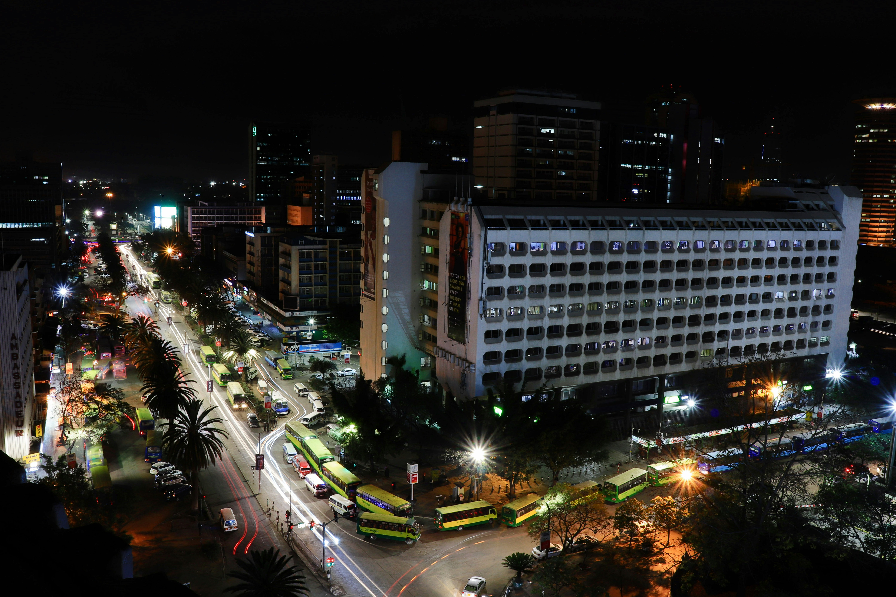

polite notice here
The former swamp land occupied by the city now was once inhabited by a pastoralist people, the Maasai, the sedentary Akamba people, as well as the agriculturalist Kikuyu people, under the British East Africa protectorate when the British decided to build a railroad from Mombasa to Kisumu on the edge of Lake Victoria in order to open East Africa and make it accessible for trade and encourage colonial settlements. The Maasai were forcibly removed to allow white ranchers to use the land. The city continued to grow under British rule, and many British people settled within the city's suburbs. This continuous expansion of the city began to anger the Maasai people, as the city was devouring their land to the south. The Kikuyus were also angered and wanted the land returned to them.[3]
In 1894, work on the railway began. A British railroad camp and supply depot for the Uganda Railway was built in the Maasai area in 1899.[4] The building soon became the railway's headquarters and a town grew up surrounding it, named after a watering hole known in Maasai as Ewaso Nyirobi, meaning 'cool waters'. The location of the Nairobi railway camp was chosen due to its central position between Mombasa and Kampala, as well as its proximity to a network of rivers that could supply the camp with water. Its elevation made it cool enough for comfortable residential living. Furthermore, at 1661 meters above the sea level, the temperatures are too low for the mosquitoes carrying malaria to survive.[5]